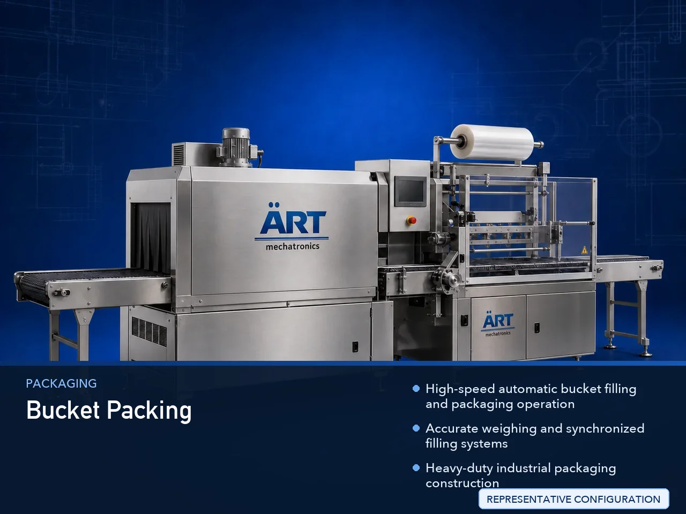

Bucket Packaging Machine (Automatic Bucket Filling & Sealing System)
A Bucket Packaging Machine, also known as a Bucket Filling Machine, Pail Filling Machine, Bucket Sealing Machine, or Automatic Bucket Packaging System, is an advanced industrial packaging solution designed for automatic bucket feeding, weighing, dosing, liquid or paste filling, lid placement,…

About the Bucket Packing
Bucket packaging systems are widely used for: ✔ Paint bucket filling ✔ Chemical bucket packaging ✔ Lubricant pail filling ✔ Adhesive bucket packaging ✔ Food bucket filling ✔ Powder bucket packaging ✔ Industrial paste packaging ✔ Bulk product packaging operations
The machine improves: ✔ Filling accuracy ✔ Product safety ✔ Leak-proof sealing quality ✔ Bulk handling efficiency ✔ Packaging consistency ✔ Production efficiency ✔ Transportation safety
Industrial bucket packaging machines use: ✔ Automatic bucket feeding systems ✔ Servo synchronized filling systems ✔ PLC and HMI automation controls ✔ Precision load cell weighing systems ✔ Lid pressing and sealing systems
to automatically fill and package buckets with superior packaging quality and high production efficiency.
Bucket packaging machines are widely used in industries such as:
Paint industries Chemical industries Lubricant industries Food processing industries Construction chemical industries Adhesive industries Agrochemical industries FMCG industries
where accurate bulk filling, leak-proof packaging, and durable industrial packaging are essential.
The machine is highly suitable for: ✔ Paint bucket filling ✔ Chemical pail packaging ✔ Lubricant bucket filling ✔ Adhesive container packaging ✔ Food product bucket filling ✔ Bulk industrial packaging
ART Mechatronics offers high-performance bucket packaging machines, engineered for continuous industrial operation, accurate bulk filling performance, durable industrial construction, and reliable long-term packaging automation.
Working Principle of Bucket Packaging Machine
- 1. Empty Bucket Feeding Empty buckets or pails are automatically fed into filling station through conveyor handling systems.
- 2. Product Filling Process Machine automatically fills products into buckets using precision weighing and dosing systems.
Servo synchronization ensures accurate filling and smooth bucket handling.
- 3. Bucket Filling Operation Machine handles: ✔ Paints ✔ Chemicals ✔ Lubricants ✔ Adhesives ✔ Pastes ✔ Powders ✔ Food products
accurately and continuously.
- 4. Lid Placement & Sealing Process Machine performs: Lid placement Cap pressing Leak-proof sealing Tamper-proof sealing Bucket locking operations
for secure and transportation-safe packaging quality.
- 5. Labeling & Inspection Integration Optional systems include: Batch coding Date printing QR code printing Leak testing systems Weight verification systems
- 6. Finished Bucket Discharge Finished buckets discharged automatically for: Warehouse storage Palletizing Industrial shipment handling Export logistics
Types of Bucket Packaging Machines
- 1. Paint Bucket Filling Machine Designed for: ✔ Paint and coating packaging applications
- 2. Chemical Bucket Packaging Machine Suitable for: ✔ Chemical and industrial liquid packaging systems
- 3. Lubricant Bucket Filling Machine Uses: ✔ Oil and lubricant packaging systems
- 4. Food Bucket Packaging Machine Designed for: ✔ Food ingredient and bulk food packaging systems
- 5. Servo Driven Bucket Packaging Machine Suitable for: ✔ Precision high-capacity filling operations
- 6. Fully Automatic Bucket Packaging System Designed for: ✔ Complete industrial bulk packaging automation lines
Industries Using Bucket Packaging Machines
🎨 Paint & Coating Industry Paints, coatings, resins, and industrial liquid packaging systems. ⚗️ Chemical Industry Industrial chemicals, solvents, and bulk chemical packaging systems. 🛢️ Lubricant & Oil Industry Lubricants, industrial oils, and grease packaging systems. 🍯 Food Processing Industry Sauces, syrups, edible oils, and bulk food ingredient packaging systems. 🏗️ Construction Chemical Industry Adhesives, waterproofing compounds, and construction material packaging systems. 🛒 FMCG Industry Bulk consumer product and industrial packaging systems.
Features & Advantages
✔ High-speed automatic bucket filling and packaging operation ✔ Accurate weighing and synchronized filling systems ✔ Heavy-duty industrial packaging construction ✔ PLC and servo automation control systems ✔ Improves product safety and transportation reliability ✔ Reduces product wastage and labor dependency ✔ Supports multiple bucket sizes and product viscosities ✔ Reliable long-term industrial performance ✔ Smooth and continuous packaging operation
Technical Highlights
Machine Type: Automatic bucket packaging machine Industrial bucket filling system Bulk packaging machine Packaging Material: Plastic buckets Metal buckets Industrial pails Bulk containers Filling Integration: Load cell weighing systems Servo dosing systems Flow meter filling systems Volumetric filling systems Features: PLC control system Servo synchronization Touchscreen HMI Automatic lid pressing systems Leak testing integration Applications: Paints Chemicals Lubricants Adhesives Food products Industrial pastes Automation: Semi-automatic Fully automatic industrial systems
Turnkey Bucket Packaging Solutions
ART Mechatronics offers: Complete bucket packaging systems Automatic bulk filling solutions Packaging automation integration systems Conveyor synchronization systems Installation & commissioning After-sales service & AMC
Why Choose Art Mechatronics
Expertise in industrial packaging and automation systems Customized bucket packaging solutions for multiple industries High-performance and durable filling technology Advanced PLC and servo automation systems Proven industrial packaging performance across sectors
Applications
Paint Manufacturing Plants Chemical Packaging Industries Lubricant Manufacturing Facilities Food Ingredient Packaging Units Construction Chemical Industries Industrial Packaging Plants
Get pricing & specs for the Bucket Packing
Share the product, target capacity, current process and plant location. These details help our engineers discuss the right machine or line configuration.
One partner, from design to start-up
ART Mechatronics designs, manufactures, installs and commissions your Bucket Packing solution with regional presence in India, UAE and Thailand.